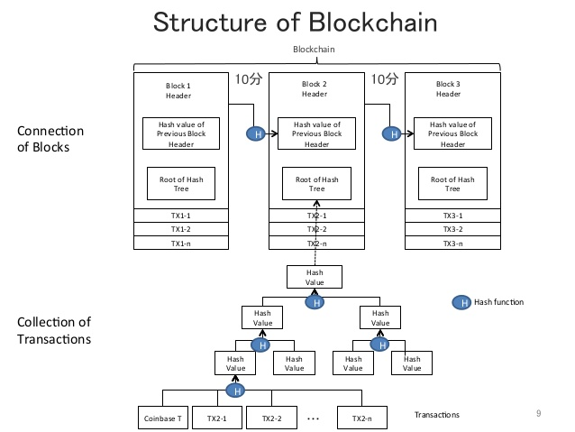

A blockchain is a decentralized, distributed and public digital ledger that is used to record transactions across many computers so that the record cannot be altered retroactively without the alteration of all subsequent blocks and the collusion of the network. This allows the participants to verify and audit transactions inexpensively. A blockchain database is managed autonomously using a peer-to-peer network and a distributed timestamping server. They are authenticated by mass collaboration powered by collective self-interests. The result is a robust workflow where participants' uncertainty regarding data security is marginal. The use of a blockchain removes the characteristic of infinite reproducibility from a digital asset. It confirms that each unit of value was transferred only once, solving the long-standing problem of double spending. Blockchains have been described as a value-exchange protocol.[21] This blockchain-based exchange of value can be completed more quickly, more safely and more cheaply than with traditional systems. A blockchain can assign title rights because it provides a record that compels offer and acceptance.

The block time is the average time it takes for the network to generate one extra block in the blockchain. Some blockchains create a new block as frequently as every five seconds. By the time of block completion, the included data becomes verifiable. In cryptocurrency, this is practically when the money transaction takes place, so a shorter block time means faster transactions. The block time for Ethereum is set to between 14 and 15 seconds, while for bitcoin it is 10 minutes.
A hard fork is a rule change such that the software validating according to the old rules will see the blocks produced according to the new rules as invalid. In case of a hard fork, all nodes meant to work in accordance with the new rules need to upgrade their software. If one group of nodes continues to use the old software while the other nodes use the new software, a split can occur. For example, Ethereum has hard-forked to "make whole" the investors in The DAO, which had been hacked by exploiting a vulnerability in its code. In this case, the fork resulted in a split creating Ethereum and Ethereum Classic chains. In 2014 the Nxt community was asked to consider a hard fork that would have led to a rollback of the blockchain records to mitigate the effects of a theft of 50 million NXT from a major cryptocurrency exchange. The hard fork proposal was rejected, and some of the funds were recovered after negotiations and ransom payment. Alternatively, to prevent a permanent split, a majority of nodes using the new software may return to the old rules, as was the case of bitcoin split on 12 March 2013.
By storing data across its peer-to-peer network, the blockchain eliminates a number of risks that come with data being held centrally. The decentralized blockchain may use ad-hoc message passing and distributed networking. Peer-to-peer blockchain networks lack centralized points of vulnerability that computer crackers can exploit; likewise, it has no central point of failure. Blockchain security methods include the use of public-key cryptography. A public key (a long, random-looking string of numbers) is an address on the blockchain. Value tokens sent across the network are recorded as belonging to that address. A private key is like a password that gives its owner access to their digital assets or the means to otherwise interact with the various capabilities that blockchains now support. Data stored on the blockchain is generally considered incorruptible. While centralized data is more easily controlled, information and data manipulation are possible. By decentralizing data on an accessible ledger, public blockchains make block-level data transparent to everyone involved. Every node in a decentralized system has a copy of the blockchain. Data quality is maintained by massive database replication and computational trust. No centralized "official" copy exists and no user is "trusted" more than any other. Transactions are broadcast to the network using software. Messages are delivered on a best-effort basis. Mining nodes validate transactions, add them to the block they are building, and then broadcast the completed block to other nodes. Blockchains use various time-stamping schemes, such as proof-of-work, to serialize changes. Alternate consensus methods include proof-of-stake.Growth of a decentralized blockchain is accompanied by the risk of node centralization because the computer resources required to process larger amounts of data become more expensive.